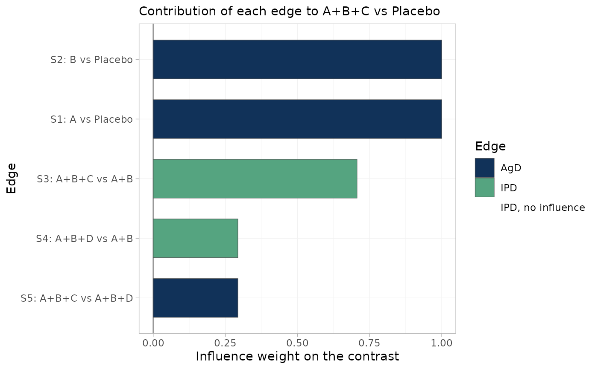

Visualizes edge_influence(): the weight with which each observed edge
enters the estimate of one relative effect. This plot exists because the
usual population-adjustment diagnostics cannot see the failure it detects.
An IPD edge with zero influence on your contrast contributes nothing to
it, so reweighting that edge cannot move the answer, however healthy its
effective sample size looks. Such edges are drawn in red and labelled.
Arguments
- object
A
cpaic_bridge,cpaic_maic, orcpaic_stcobject.- treatment, comparator
The contrast of interest.
comparatordefaults to the network reference.- ...
Passed to
edge_influence()(for exampletol).
Details
There is no counterpart to this plot in multinma; it is specific to the component bridge, where a contrast is a weighted combination of edges chosen by the component design rather than by the network path.
Examples
net <- cpaic_network(cpaic_bin_agd, ipd = cpaic_bin_ipd, sm = "OR",
family = "binomial", ipd_covariates = "x1",
inactive = "Placebo")
br <- cnma_bridge(net)
plot_edge_influence(br, treatment = "A+B+C")
